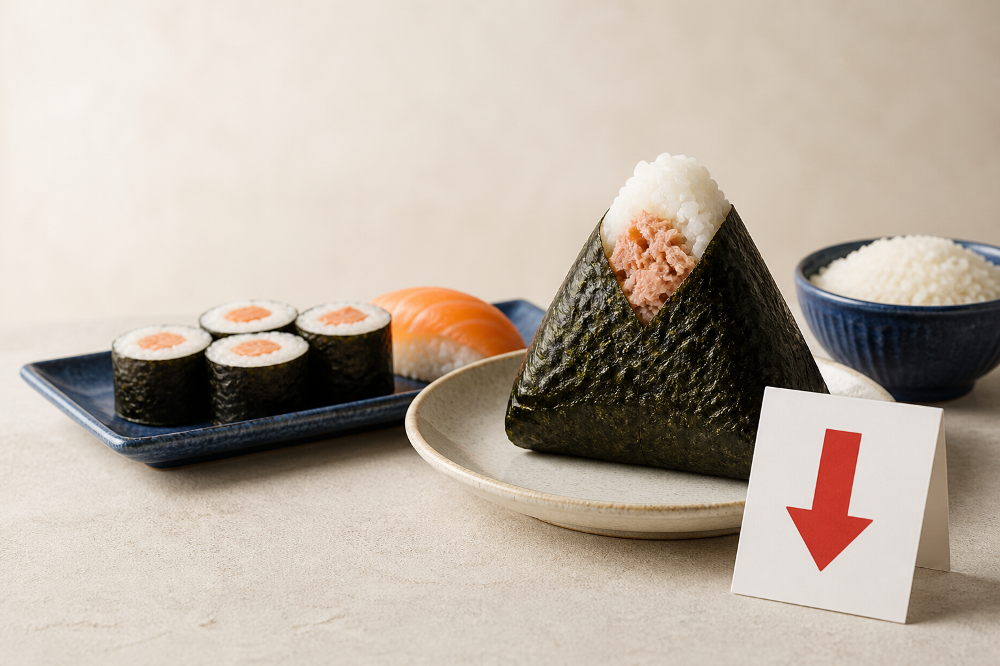
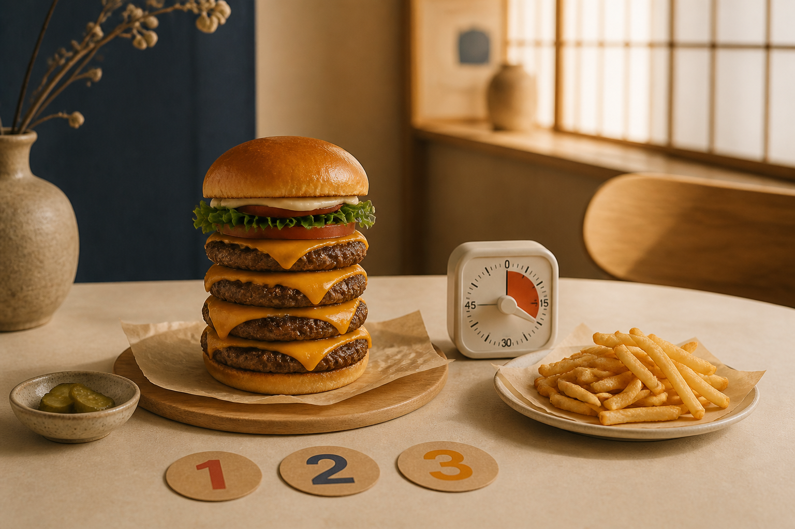

Notizie da leggere
Studia l’italiano attraverso notizie attuali, con ascolto, parole chiave, traduzione cinese ed esercizi.

Contanti
Gli americani usano meno contanti, ma molti continuano ancora a portarli con sé.

Prezzi del riso
In Giappone, i negozi abbassano i prezzi di onigiri, sushi e altri prodotti a base di riso.
Personalità e longevità
Una ricerca in Sardegna esplora il rapporto tra personalità, benessere psicologico e qualità della vita.
Amicizie sul lavoro
Secondo uno studio, le donne costruiscono sul lavoro reti di amicizia più solide e affiatate.
Vivere più a lungo
Un sondaggio rivela a cosa rinuncerebbero le persone in cambio di una vita più lunga e sana.

La sfida di Burger King
Torna in Giappone la competizione “mangia quanto vuoi”, tra hamburger, turni e regole rigorose.

Decor dopaminico
Colori vivaci, motivi giocosi e oggetti personali possono rendere la casa più gioiosa.

Nomadi digitali
Seul e Tokyo guidano una classifica delle migliori città per lavorare da remoto mentre si viaggia.
Un parco di Dragon Ball
Un nuovo parco a tema Dragon Ball sarà costruito vicino a Parigi grazie a investimenti sauditi.

Vacanze sostenibili
Trasporti, bagagli, alloggi e cibo locale: consigli per viaggiare con un’impronta più leggera.

Arredare una casa in affitto
Tre consigli semplici per personalizzare una casa in affitto con arte, tessili e piante.